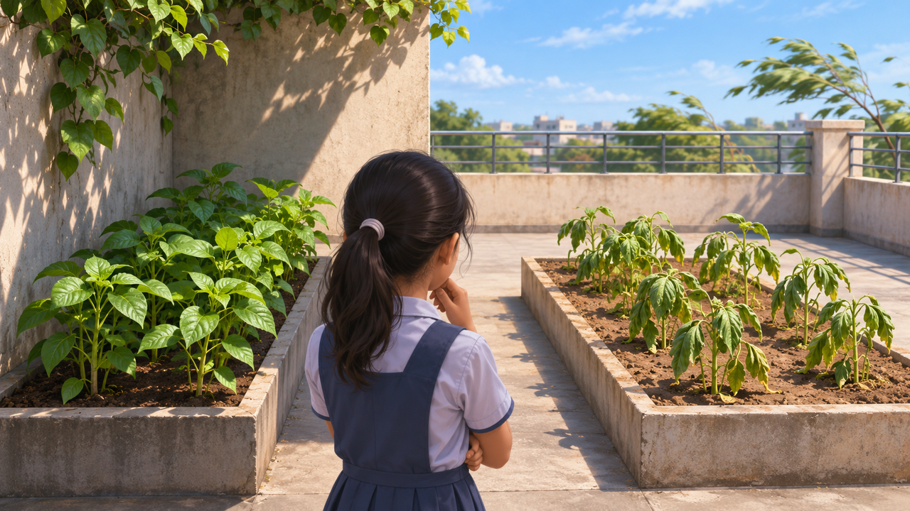

النباتات والزراعة
حديقة السطح
السطح نفسه، وكأنّهما فصلان مختلفان

الحديقة فوق المكتبة
«هل سقى أحد نصف السطح فقط؟» وقفت ميا البالغة إحدى عشرة سنة عند مدخل حديقة سطح مكتبة المدرسة. قرب الجدار بدت نباتات نضرة، وعند الطرف المكشوف كانت بعض الأوراق متدلّية. زرع الصفّ النوع نفسه في كلّ الأحواض، بفارق دقائق فقط.
يزور الأطفال الحديقة بمرافقة بالغ فقط، وعلى السطح كانت أحواض قرب الجدار وأحواض معرّضة للشمس والريح. كانت المسافة بينها قصيرة، لكن النتيجة بدت مختلفة.
في البداية بدوا جميعًا متشابهين. ظهر التغيّر بعد نحو أسبوعين فقط — ولم يتذكّر أحد في أيّ يوم بدأ بالضبط.
تغيّر مفاجئ
في الحوض قرب الجدار تبقى الأوراق ثابتة، بينما في الحوض المكشوف تبدو بعض الأوراق متدلّية خاصّة بعد الظهر. مدّ صديق في المجموعة يده أصلًا إلى الإبريق. «هي عطشى»، أعلن. أوقفته المرشدة: مظهر ورقة متدلّية لا يثبت بالضرورة نقص الماء. إضافة ماء تغيّر ظروف التجربة — وأحيانًا قد تضرّ أيضًا.
لاحظت ميا أنّ تربة تبدو جافّة من الأعلى لا تروي بالضرورة ما يحدث في العمق. والآن صارت العلامة التي رأوا أقلّ وضوحًا أيضًا: قد يستجيب النبات للحرارة أو الريح أو الماء أو لعدّة ظروف معًا.
وقفت ميا عدّة خطوات جانبًا وأحسّت بريح أقوى. سطح مظلّل في ساعة كان مضاءً في ساعة أخرى. «لعلّ السطح ليس مكانًا واحدًا»، فكّرت، «بل بيئات صغيرة عدّة».
الشمس والريح
تلاحظ ميا أنّ ظلّ الجدار يتحرّك خلال اليوم. في مكان أكثر انفتاحًا تكون الريح قويّة وأحيانًا تتحرّك أدوات العمل الصغيرة على الطاولة. وحتّى سطح التربة في الأحواض لا يبدو متماثلًا تمامًا.
لكن ميا لا تستطيع أن ترى بالعين كم ماء تحت سطح التربة أو ما كانت درجة الحرارة حين لم تكن على السطح.
حاجة مجموعة البستنة
تريد المجموعة العناية بالنباتات بطريقة تناسب كلّ حوض لا وفق إحساس عامّ عن السطح كلّه. أحيانًا يكفي رصد اختلاف في الزمن، وأحيانًا ينبغي فهم إن استمرّ أيّامًا أو دقائق.
تشرح المرشدة أنّ حديقة جيّدة تتطلّب انتباهًا للمكان والزمن. قرار يناسب نباتًا في الشمس ليس بالضرورة صحيحًا لنبات آخر في الظلّ.
الصباح ليس الظهيرة
في اليوم التالي، بمرافقة المرشدة، عادت إلى الحديقة في ساعة أبكر. كاد بعض الفروق يختفي. هل كانت القصّة السابقة مجرّد لحظة حارّة خاصّة؟ في نهاية الزيارة قارنت ميا صورتين: في الأولى بدت أوراق متدلّية والشمس مرتفعة؛ وفي الثانية كانت الأوراق منتصبة لكن الحوض كلّه في الظلّ. «هذه النباتات نفسها»، قالت، «لكن ليست الظروف نفسها». المقارنة العادلة تتطلّب معرفة متى صُوّر ومن أين أيضًا.
بدل اختيار سبب واحد فورًا تطلب إعداد جدول صغير: زمن، مكان، حالة الأوراق وظروف البيئة. الجدول لا يثبت بعد ما سبب الفرق، لكنّه يحوّل الارتباك إلى أسئلة يمكن بحثها.
المعلومات الناقصة
من المعروف أين يقع كلّ حوض، وأيّ نباتات زُرعت ومتى رُصد تغيّر. وغير معروف في أيّ ساعات يصل ضوء مباشر لكلّ حوض، وما رطوبة التربة، وكم تبلغ قوّة الرياح على امتداد اليوم.
تسأل ميا إن كانت هناك طريقة لجمع معلومات تساعد على فهم حالة متغيّرة من دون الاعتماد فقط على زيارة بضع دقائق.
قبل أن نبتكر
قبل أن تفكّر المجموعة بمعدّات أو منتج جديد تقترح ميا صياغة التحدّي: كيف نعرف متى تكون ظروف نموّ حوض معيّن غير مناسبة، لا أنّ مظهره فقط مختلف؟
أيّ بيانات عن البيئة والنبات ينبغي جمعها معًا؟ وكيف تفصلون بين سبب ممكن وحقيقة؟ ومتى يجدر طلب مختصّ بزراعة النباتات لفحص النتائج؟
تلميح من عالم الفضاء
في أنظمة زراعة النباتات في الفضاء تُجرى مراقبات وتُرصد عدّة ظروف بيئيّة بالتوازي. فكّروا لماذا لا يصف قياس من مكان واحد دائمًا بيئة نموّ كاملة.
بعد القراءة — في ورقة الفريق
تحدّثوا في الفريق وأجيبوا استنادًا إلى معلومات القصّة. إذا نقصت معلومة، اكتبوا سؤالًا للمتابعة.
- من تريدون مساعدته في القصّة؟
- ماذا يحاول أن يفعل وما الذي يصعّب عليه ذلك؟
- ما الذي يحتاج إلى أن يكون قادرًا على فعله؟
- ما الذي تريدون معرفته أيضًا قبل تطوير الأفكار؟